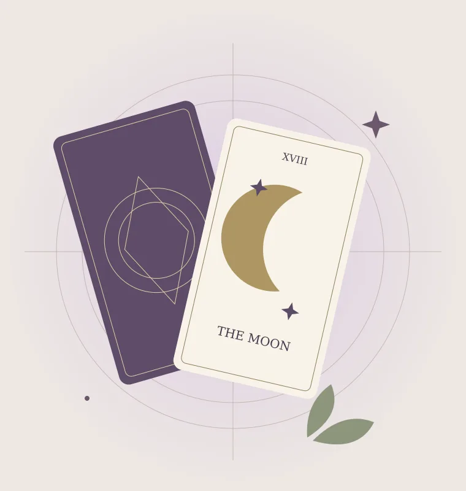
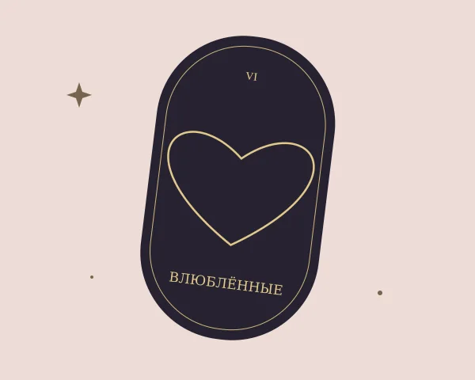
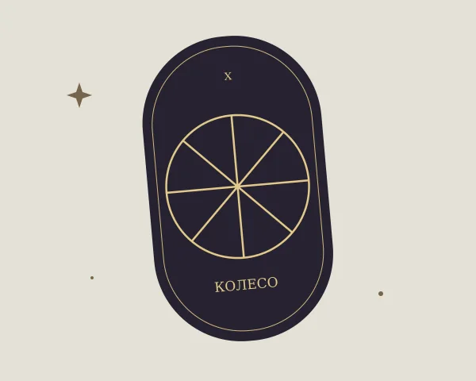
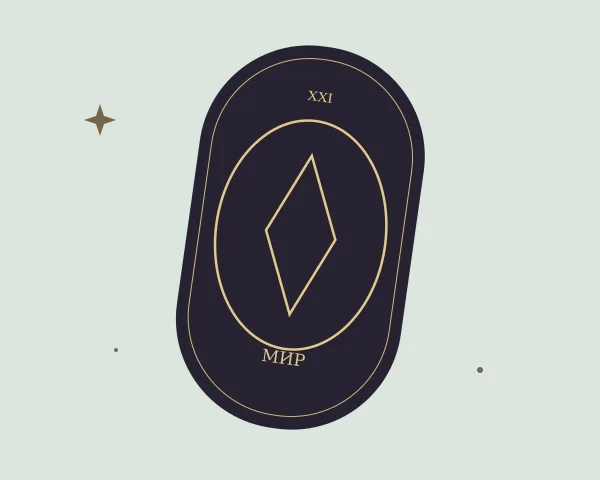

Ваш запрос
Один вопрос или большая история. Вы выбираете глубину разговора.
Таро как разговор с собой
Остановитесь на мгновение. Посмотрите на свою историю через символы Таро и найдите пространство для собственных ответов.
Индивидуально · Онлайн · В вашем ритме

XVIII — THE MOONОдин вопрос или большая история. Вы выбираете глубину разговора.
Письменный разбор с изображением расклада или онлайн-сессия.
Время на то, чтобы обдумать ответ и задать уточняющий вопрос.
Без категоричных прогнозов. Решения всегда остаются за вами.
Выберите то, что откликается

3 карты · 15 минут
Бережный взгляд на один конкретный вопрос. Подойдёт для первого знакомства с форматом.

7 карт · 30 минут
Ваши ожидания границы и общение. Посмотрите на отношения с новой стороны.

5 карт · 25 минут
Два варианта ваши сомнения и ресурсы. Пространство для осознанного выбора.

9 карт · 40 минут
Вопросы работы творчества и личных приоритетов. Исследуйте то что для вас важно.

10 карт · 45 минут
Темы ближайшего месяца как повод для рефлексии: отношения занятия и забота о себе.

12 карт · 60 минут
Развёрнутая сессия вокруг вашего запроса с временем на уточняющие вопросы.
Наш подход
Мы используем символы Таро как повод посмотреть на привычные ситуации иначе. Без обещаний изменить судьбу и готовых решений за вас.
Ближе к Лунной линии ↗Впечатления
Примеры контента для учебного макета, не отзывы реальных клиентов.
«Понравилось, что до выбора видно количество карт и формат сессии.»
«Удобно сравнить несколько вариантов и спокойно выбрать подходящий.»
«Чёткие описания помогли сформулировать вопрос перед сессией.»
Давайте познакомимся
Если пока сложно выбрать расклад, опишите свой запрос. В демоверсии можно проверить работу формы.
Онлайн · 10:00–20:00 МСК
Ответы на частые вопросы ↗